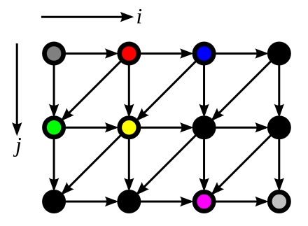

Polyhedral Model
cs6120-Advanced Compilers text
The polyhedral model (also called the polytope method) is a mathematical framework for programs that perform large numbers of operations -- too large to be explicitly enumerated -- thereby requiring a compact representation. Nested loop programs are the typical, but not the only example, and the most common use of the model is for loop nest optimization in program optimization. The polyhedral method treats each loop iteration within nested loops as lattice points inside mathematical objects called polyhedra, performs affine transformations or more general non-affine transformations such as tiling on the polytopes, and then converts the transformed polytopes into equivalent, but optimized (depending on targeted optimization goal), loop nests through polyhedra scanning.
多面体模型（也称为多面体方法）是一个数学框架，用于执行大量运算的程序 -- 太大而无法显式列举 -- 因此需要紧凑的表示。嵌套循环程序是典型的但不是唯一的例子，该模型最常见的用途是程序优化中的循环嵌套优化。多面体方法将嵌套循环中的每个循环迭代视为称为多面体的数学对象内的格子点，执行仿射变换或更通用的非仿射变换，例如在多面体上平铺，然后通过多面体扫描将转换后的多面体转换为等效但优化（取决于目标优化目标）的循环嵌套。

Polyhedral model in programming
Frameworks supporting the polyhedral model
多面体模型及其在循环编译优化中的应用
多面体模型是一个用于表示和优化程序的数学框架，尤其适用于涉及循环的程序。它是编译器技术中执行优化的强大工具，尤其在高性能计算中具有重要作用。下面我们将详细解析该概念及其在循环优化中的应用。
多面体模型概述
多面体模型是一个用于描述循环及其迭代的数学抽象，采用多维几何体（即多面体）来表示循环的迭代空间。通过对这些多面体的优化，可以提升程序的执行效率。
在多面体模型中，循环通过以下关键要素进行表示：
- 循环边界：定义循环变量可能取的范围。
- 依赖关系：描述循环迭代之间的关系，特别是数据依赖（如读后写或写后读），这些关系必须在转换过程中保持一致。
- 迭代空间：表示所有可能的循环迭代的多维空间，通常以多面体形式可视化，每个点代表一个循环的迭代。
多面体模型的工作原理
- 循环表示：在多面体模型中，循环通过一组数学不等式表示，这些不等式定义了循环变量的边界。例如，嵌套循环可以用一组不等式来描述，这些不等式构成一个多面体，其中每个点对应循环的一个迭代。
依赖分析：在循环程序中，不同迭代之间可能会存在数据依赖。多面体模型可以帮助正式分析这些依赖，判断哪些迭代可以并行执行，哪些需要按照特定顺序执行以保证程序正确性。
转换操作：多面体模型允许对循环进行各种转换，例如：
- 循环融合：将两个循环合并为一个循环，以提高数据局部性。
- 循环分裂：将一个循环拆分为两个，以提高并行性或数据局部性。
- 循环块化（Tiling）：将循环迭代空间分成更小的块（tile），以提高缓存使用效率和局部性。
- 循环交换：改变嵌套循环的执行顺序，以改善内存访问模式或并行性。
多面体模型在循环编译优化中的应用
并行化：多面体模型可以帮助识别并行执行的机会。通过分析迭代空间和数据依赖关系，模型能够判断哪些循环迭代可以安全地并行执行，这对于多核处理器的利用至关重要。
缓存优化：多面体模型通过转换循环来优化内存访问模式，提升数据局部性。例如，通过应用循环块化或分块技术，模型确保多个循环迭代访问的数据可以适配到缓存中，从而减少内存延迟。
矢量化：多面体模型可以帮助判断哪些循环部分可以进行矢量化，从而更好地利用现代处理器的 SIMD（单指令多数据）指令集。
乱序执行：通过分析循环依赖关系，多面体模型可以帮助编译器确定哪些迭代可以乱序执行，从而提高指令级并行性，并在现代处理器上获得更好的性能。
自动并行化：该模型在自动并行化编译器中扮演重要角色，通过分析循环结构和依赖关系，它可以决定哪些循环或循环部分可以安全并行化。
针对特定架构的优化：多面体模型可以生成针对特定硬件的优化代码，如 GPU，通过应用适合该架构内存层次结构和处理能力的转换来提升性能。
多面体模型的优点
- 数学严谨性：多面体模型提供了一种精确且正式的方式来描述循环，使编译器可以更容易地推理循环优化。
- 表达能力强：它能够在一个统一的框架中表达多种循环优化，如并行化、局部性优化和矢量化。
- 自动化：它能够自动优化代码，减少手动调整的需求。
多面体模型的挑战
- 复杂性：多面体模型数学上较为复杂，在编译器中实现起来可能具有一定难度，尤其是在处理具有复杂依赖关系的程序时。
- 可扩展性：对于大规模应用程序，管理多面体表示的开销可能会非常大，尤其是在内存和计算上。
示例
考虑一个简单的嵌套循环：
for (i = 0; i < N; i++) {
for (j = 0; j < N; j++) {
A[i][j] = B[i][j] + C[i][j];
}
}
在多面体模型中，i和j的迭代空间被表示为一个二维多面体。依赖分析表明，内循环的每次迭代依赖于前几次迭代的数据。基于此，模型可以应用循环融合或块化等优化技术，从而提高缓存使用效率或并行性。
结论
多面体模型是一个用于优化循环的复杂工具。通过将循环表示为多面体并分析其依赖关系，模型能够实现包括并行化、循环转换（如块化、融合等）和内存优化在内的多种优化。尽管它的实现较为复杂，但它已成为高性能编译技术的基础，尤其在科学计算和高性能应用中具有重要意义。
The Polyhedral Model is a mathematical framework used to represent and optimize programs, particularly those involving loops. It is a powerful tool for performing optimization in compiler technology, especially in high-performance computing. Let's break down the concept and its application to loop optimization.
Polyhedral Model Overview
The Polyhedral Model is a mathematical abstraction used to describe loops and their iterations in terms of multi-dimensional shapes, or polyhedra. These polyhedra represent the iteration spaces of loops, and their optimization helps improve the performance of programs.
In the polyhedral model, loops are represented using the following key components:
- Loop Bounds: The range of indices that a loop variable can take.
- Dependences: The relationships between iterations of loops, specifically data dependencies (such as read-after-write or write-after-read), which must be respected during transformations.
- Iteration Spaces: The multi-dimensional space that represents all possible iterations of the loops. These are often visualized as polyhedra (multi-dimensional geometric objects) where each point corresponds to an iteration of the loop.
How the Polyhedral Model Works
Representation of Loops: In the polyhedral model, loops are represented in a high-level mathematical form. For example, a nested loop can be described by a set of inequalities that define the bounds of the loop's variables. This set of inequalities is a polyhedron, where each point corresponds to an iteration of the loop.
Dependence Analysis: In loop programs, data can be dependent across different iterations. The polyhedral model enables the formal analysis of such dependencies, helping identify if iterations can be executed in parallel or need to be executed in a specific order to preserve correctness.
Transformations: The polyhedral model allows for a variety of transformations on the loops, such as:
- Loop Fusion: Combining two loops into one to improve data locality.
- Loop Fission: Splitting a loop into two to enhance parallelism or data locality.
- Loop Tiling (Blocking): Dividing the loop iteration space into smaller blocks (tiles) to improve cache usage and locality.
- Loop Interchange: Changing the order of nested loops to improve memory access patterns or parallelism.
Applications in Loop Compilation and Optimization
Parallelism: The polyhedral model helps identify opportunities for parallel execution. By analyzing the iteration space and data dependencies, it can determine whether iterations can be safely executed in parallel, which is crucial for leveraging multi-core processors.
Cache Optimization: The polyhedral model can help optimize memory access patterns by transforming loops to improve data locality. For example, by applying loop blocking or tiling, the model can ensure that data accessed by multiple iterations of the loop fit within the cache, reducing memory latency.
Vectorization: The polyhedral model aids in determining which parts of the loop can be vectorized, allowing for better utilization of SIMD (Single Instruction, Multiple Data) instructions on modern processors.
Out-of-Order Execution: By analyzing loop dependencies, the polyhedral model helps compilers determine which iterations can be executed out of order, improving instruction-level parallelism and performance on modern processors.
Automatic Parallelization: The model plays a crucial role in compilers that automatically parallelize code. By analyzing the loop structure and dependencies, it can decide which loops or parts of loops can be parallelized safely.
Optimization for Specific Architectures: The polyhedral model can be used to generate optimized code for specific hardware, such as GPUs, by applying transformations that are well-suited for the architecture's memory hierarchy and processing capabilities.
Advantages of the Polyhedral Model
- Mathematical Rigor: The polyhedral model provides a formal and precise way to describe loops, making it easier for compilers to reason about loop optimizations.
- Expressive Power: It can express a wide range of loop optimizations, such as parallelism, locality, and vectorization, in a unified framework.
- Automation: It enables automatic optimization of code, reducing the need for manual tuning.
Challenges of the Polyhedral Model
- Complexity: The polyhedral model is mathematically complex and can be difficult to implement in compilers, especially for very large programs with intricate dependencies.
- Scalability: For large-scale applications, the overhead of managing polyhedral representations can be significant, especially in terms of memory and computation.
Example
Consider a simple nested loop:
for (i = 0; i < N; i++) {
for (j = 0; j < N; j++) {
A[i][j] = B[i][j] + C[i][j];
}
}
The polyhedral model represents the iteration space of i and j as a 2D polyhedron. Dependence analysis would show that each iteration of the inner loop depends on data from the previous iterations. Based on this, the polyhedral model can apply optimizations like loop fusion or tiling to improve cache usage or parallelism.
Conclusion
The Polyhedral Model is a sophisticated tool used in compilers for optimizing loops. By representing loops as polyhedra and analyzing their dependencies, it allows for a range of optimizations, including parallelization, loop transformations (tiling, fusion, etc.), and memory optimizations. Although it can be complex to implement, it has become a foundational technique for high-performance compilation, especially in scientific computing and high-performance applications.